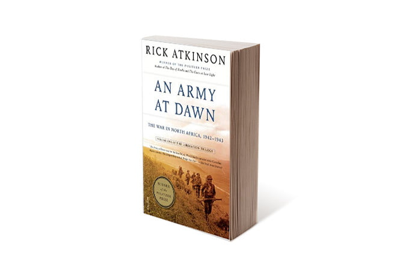

The Best Historical Books
The Crusades, Thomas Asbridge
I have read Thomas Asbridge’s magisterial work, The Crusades, three times,
and after each reading I come away with more knowledge of and insight
about the years spanning from the late 11th century to the late 13th. (Three
times. Seriously.) The single-volume book is as equally impressive for the
amount of doggedly researched information as it for its easy readability.
Asbridge not only covers all of the major campaigns and battles of the
Crusade era, painting vivid portraits of all the major players involved
(Richard the Lionheart, Saladin, and the Sultan Baybars being notable
examples), he also places the Crusades in context, both elucidating what led
up to the many clashes and how their legacy changed the face of the world.

The Guns of August, Barbara Tuchman
The horrific cataclysm that was once known as The Great War, now World
War I, left scars so deep they are hardly healed today. It shattered empires
and nations, it ripped apart the land, and it left some 17 million people dead
and tens of millions with life-changing injuries. And it’s ridiculous that the
damn thing happened. To cover the entirety of the war, you are going to
need to read several books, but to gain an appreciation for how and why the
conflict started, you need to read Barbara Tuchman’s seminal work The Guns
of August. The title refers to August 1914, the month in which active hostilities
commenced.

The Liberation Trilogy, Rick Atkinson
Rick Atkinson didn’t write the book about World War II, he wrote the books.
His three-volume series, An Army at Dawn: The War in North Africa, 1942-1943,
he Day of the Battle: The War in Sicily and Italy, 1943-1944, and The Guns at
Last Light:he War in Western Europe, 1944-1945, is about the best
resource you could ask for when it comes to a comprehensive telling of
America’s role in the entirety of the Western Theater of WWII. In reading the
books, it’s shocking to learn at first how ill-prepared America was for war
and amazing just how good we got at waging it in less than half a decade.
Through the course of the books, you follow generals and GIs as, slowly but
steadily, the tide turns from a harrowing defensive fight against Axis forces
to a certain and total victory.

|